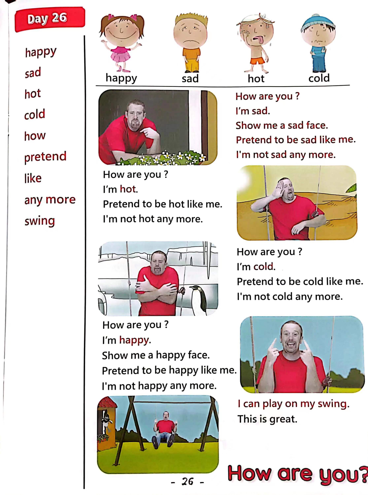

Day 26
Unit 8 · story
教材重点
教材重点依据网盘文件“第三级红色每日打卡全.pdf”，PDF 第 28 页对应 Day 26；以原图为准，避免对图片文字做不可靠的自动识别。
网盘教材重点原图 · PDF 第 28 页对应 Day 26

Unit 8 · story · 5–6岁
happy · sad · hot · cold
Hello, hello, hello, hello, everyone. Hello. Hello.
台词本为机器转写，可能存在识别误差；不等同于视频逐字原声。
详细内容
Part 1 核心词汇
必须掌握 · 4 个Part 2 跟读句型与句型拓展
左侧保留台词本原句，右侧为替换练习；拓展内容不是视频逐字台词。
Hello, hello, hello, hello, everyone. Hello. Hello.
Everyone, hello. Hello.
Everyone say, hello. Everyone.
Happy, sad, hot and cold.
Oh, hey, hello, boys and girls, how are you are you happy or sad?
Part 3 台词本全文
来源：第3级台词本 · 026.Wow!Red - Unit 8 'feelings' - part 1 story_8_1.pdf。以下保留网盘 PDF 的机器转写文本，仅清理了文件路径页眉和空行。
Hello, hello, hello, hello, everyone. Hello. Hello.
Everyone, hello. Hello.
Everyone say, hello. Everyone.
Happy, sad, hot and cold.
I
Oh, hey, hello, boys and girls, how are you are you happy or sad?
Well, hey, I'm a little sad today because look, it's raining, and I want to go outside and play.
How.
I'm sad, hey, why don't you pretend to be sad like me, show me a sad face like this Look, hmm,
Show me a sad face.
Yeah. Okay. Now when I say, how are you, you say, I'm sad. Okay. I ready.
How are you I'm sad. How are you I'm sad.
How are you I'm sad.
Well, done, yeah, hello, maggie, how.
I'm sad, I want to go outside to play, but I can't.
Hey, I can help time for a little muggy. Maggie.
I can play on my swing now, how are you now? Steve, well,
I'm not sad anymore, no, no.
But I am quite hot, hoo, actually, I'm very hot. Where am i? Oh,
Hey, it's really hot here.
Wouldn't you.
Pretend to be hot like me, come on, pretend to be hot like this. HA, ha, HA, pretend to be hot. Come on.
Oh, oh, yeah, that's right. And when I say, how are you, you know, say, I'm hot.
Who? Okay? Come on, how are you.
I'm hot. How are you I'm hot How are you.
I'm hot, well done.
Hey Maggie, yeah, oh, I think I'm too hot, actually, can you help, okay?
Let's have a little more. Thank you. Okay. Thanks, maggie, okay, well, I'm not.
Hot any more? Go, HO, I'm getting a bit cold, hoo. Where am I.
Oh, I'm really cold now.
/
-
/3/026.Wow!Red - Unit 8 'feelings' - part 1 story_8_1.txt[2022/3/29
星期二
6:47:17]
Hey, why don't you pretend to be cold like me Can't pretend to be cold like this.
Pretend to be cold, come on, that's right.
Now when I say, how are you you say, I'm cold. Okay. Are you ready How are you.
I'm cold. How are you.
I'm cold. How are you I'm cold here, well done, hey, maggie, how.
I'm too cold now, can you help again, please, okay, get ready.
For some fucking.
Hey, look, where am I? Yeah, I'm at home.
And it's not raining great, so I'm not sad any more. No, I'm not.
Hot any more, who no, and I'm not cold any more. No, I am.
Happy. Hey. Show me.
A happy face, show me a happy face like this, well done. So when I say, how are you, you say.
I'm happy. Come on. How are you.
I'm happy, and again, how are you.
I'm happy last time, how are you I'm happy? Yeah?
I'm so happy because I can play on my swing. This is great.
Oh thank you, maggie, hey, I am happy, happy, happy, happy, happy.
A Japanese.
Three boys, a girl, see you next time. Bye bye.
Uh,